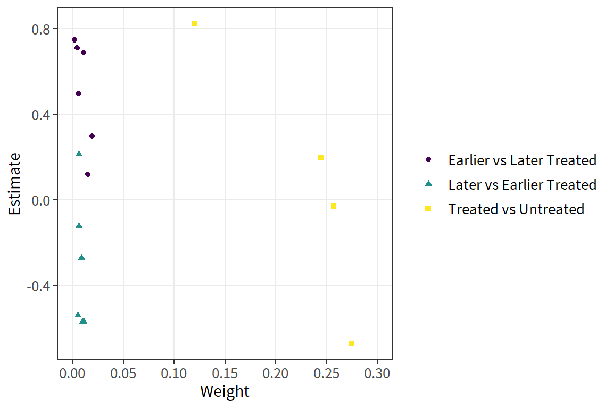
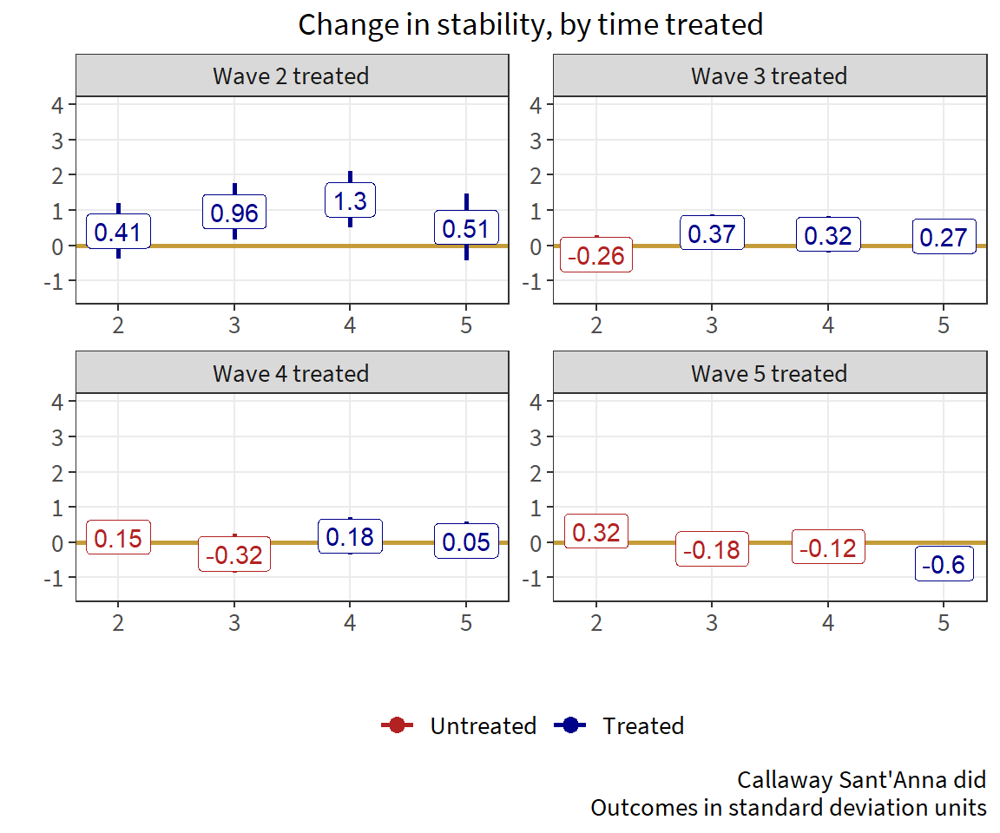

| treated | untreated | estimate | weight | type |
|---|---|---|---|---|
| 4 | 5 | 0.1182 | 0.01524 | Earlier vs Later Treated |
| 3 | 5 | 0.2976 | 0.01930 | Earlier vs Later Treated |
| 2 | 5 | 0.6868 | 0.01066 | Earlier vs Later Treated |
| 5 | 4 | -0.5375 | 0.00508 | Later vs Earlier Treated |
| 3 | 4 | 0.4973 | 0.00603 | Earlier vs Later Treated |
| 2 | 4 | 0.7093 | 0.00444 | Earlier vs Later Treated |
| 5 | 99999 | -0.6729 | 0.27424 | Treated vs Untreated |
| 4 | 99999 | -0.0291 | 0.25710 | Treated vs Untreated |
| 3 | 99999 | 0.1964 | 0.24425 | Treated vs Untreated |
| 2 | 99999 | 0.8232 | 0.11998 | Treated vs Untreated |
| 5 | 3 | -0.5686 | 0.00965 | Later vs Earlier Treated |
| 4 | 3 | 0.2135 | 0.00603 | Later vs Earlier Treated |
| 2 | 3 | 0.7473 | 0.00211 | Earlier vs Later Treated |
| 5 | 2 | -0.5680 | 0.01066 | Later vs Earlier Treated |
| 4 | 2 | -0.2707 | 0.00889 | Later vs Earlier Treated |
| 3 | 2 | -0.1216 | 0.00633 | Later vs Earlier Treated |
Rescuing impact measurements
Differential treatment timing and duration in d-i-d estimation
Session Objectives
Understand the basic setup of quasi-experimental difference-in-differences
Understand how d-i-d generalizes to multiple time periods and groups, and how complications can arise
Recognize adjustments to handle additional complexity
Appreciate that generating defensible quasi-experimental impact estimates is difficult
How Do We Do Difference-in-differences?
Under randomized d-i-d, the pre-treatment measurement is used to improve precision
Under quasi-experimental d-i-d, we depend on the pre-treatment trend to remove time-invariant sources of bias
For this to work, we must demonstrate or convincingly argue for parallel pre-treatment trends
If we justify parallel trends, we can use the break in trends after treatment to estimate the treatment effect
Quasi-experimental d-i-d
\(y_{it}=\beta_0+\delta_{0,t}Post_t+\beta_{1,i}Treat_i+\delta_{1,it}Post_t\times Treat_i+\epsilon_{it}\) \(y_{it}=10 + 2\times Post_t + 2\times Treat_i + 4\times{Post_t\times Treat_i} + \epsilon_{it}\)

The Estimating Equation
\(y_{it}=\beta_0+\delta_{0,t}Post_t+\beta_{1,i}Treat_i+\delta_{1,it}Post_t\times Treat_i+\epsilon_{it}\)
where..
\(\beta_0\) is the comparison group at baseline
\(\delta_0\) is the change in comparison group from baseline to endline
\(\beta_1\) is the baseline difference between the treatment and comparison
\(\delta_1\) is the treatment effect, the interaction of treatment and time
Plugging Values into the Equation
\(y_{it}=\beta_0+\delta_{0,t}Post_t+\beta_{1,i}Treat_i+\delta_{1,it}Post_t\times Treat_i+\epsilon_{it}\)
\(y_{it}=10 + 2\times Post_t + 2\times Treat_i + 4\times{Post_t\times Treat_i} + \epsilon_{it}\)
| Group | Baseline | Endline | Difference |
|---|---|---|---|
| Comparison | 10 | 12 | 2 |
| \(\beta_0\) | \(\beta_0+\delta_0\) | \(\delta_0\) | |
| Treatment | 12 | 18 | 6 |
| \(\beta_0+\beta_1\) | \(\beta_0+\delta_0+\beta_1+\delta_1\) | \(\delta_0+\delta_1\) | |
| Difference | 2 | 6 | 4 |
| \(\beta_1\) | \(\beta_1 + \delta_1\) | \(\delta_1\) |
Generalizing d-i-d to Many Periods/Groups
When we generalize to multiple time periods and/or groups, we have the two-way fixed effect (TWFE) estimator
\(y_{gt}=\alpha_g+\alpha_t+\beta^{DD}_{gt}+\epsilon_{gt}\)
where..
\(\alpha_g\) are group fixed effects
\(\alpha_t\) are time fixed effects
\(B^{DD}_{gt}\) indicates whether group g in period t is treated
But What is \(\beta^{DD}_{gt}\) Actually Telling Us?
For the canonical 2x2, we know exactly what we are estimating
For g groups and t time periods, we are getting some average of multiple 2x2s
But how does this work, exactly?
Two Treatment Groups, Early and Late
Let’s take a single step from two time periods to three, where treatment can be adopted at either t = 2 or t = 3

Not a Problem

Not a Problem

Not a Problem

COULD BE PROBLEM!

Where Does This Leave Us?
- TWFE treats some data that is under treatment status as comparison!
- Not an issue under constant treatment effect
- Stable unit treatment value (SUTVA)
- No variation in treatment effect for any reason
TWFE Fails
But TWFE fails under the following conditions:
- Different treatment groups have different treatment effects
- Treatment effects are dynamic over post-treatment periods
- Heterogeneous treatment effects across sub-groups within a treated group
Definitely a Problem
What is the solution?

New Estimators, Old Evaluation
Measuring Impact of Stabilization Initiatives (MISTI)
Can community-driven development activities build local government legitimacy in a conflict-affected environment?
MISTI Background
- Village panel survey in five waves, Sep 2012 - Nov 2014
- ~5,000 villages surveyed across 130 districts and 23 provinces
- ~ 30,000 household interviews per wave
- 860 treated villages at any wave (17%)
- 355 villages surveyed in all five waves
- 85 villages treated (24%)
MISTI Treatment Areas

MISTI Treatment Timings
| Wave | Comparison Villages |
Treated Villages |
Cumulative Treated |
|---|---|---|---|
| 1 | 355 | 0 | 0 |
| 2 | 341 | 14 | 14 |
| 3 | 322 | 19 | 33 |
| 4 | 302 | 20 | 53 |
| 5 | 270 | 32 | 85 |
Before Estimation, Matching
Doubly-robust estimation
- Match on all variables that predict treatment and outcome
- Coursened Exact Matching

Single-wave Analysis
Final reporting of MISTI relied on a series of single-wave estimations
| Measure | Wave 2-4 | Wave 2-5 | Wave 3-4 | Wave 4-5 | Wave 3-5 |
|---|---|---|---|---|---|
| Stability | .031 | .043 | .003 | -.039 | -.002 |
MISTI Two Way Fixed Effects (TWFE)
\(y_{it}=\alpha_i+\alpha_t+\beta^{DD}_{it}+\epsilon_{it}\)
\(y_{it}=village_i+wave_t+treated^{DD}_{it}+\epsilon_{it}\)
| Term | Estimate | Standard Error |
t statistic | p value |
|---|---|---|---|---|
| Treatment | -.0389 | .0947 | -.411 | .681 |
Diagnostic: the Bacon Decomposition
- The Bacon decomposition will take a TWFE model and decompose it into the full array of 2x2 d-i-d cells used to construct the overall estimate
- The decomposition will also calculate the variance-weights used in regression to see which 2x2 cells are powering the overall estimate
- After diagnosing a problem, the researcher can correct for the bias by using the newer estimators
MISTI bacondecomp 2x2 Cells
Plot of 2x2 Cells
MISTI bacondecomp
type weight avg_est
1 Earlier vs Later Treated 0.0578 0.3911
2 Later vs Earlier Treated 0.0466 -0.3465
3 Treated vs Untreated 0.8956 -0.0506[1] -0.0389If the Bacon Decomposition reveals a problem, use the newer estimators
Callaway and Sant’Anna (2021)
This estimation gives you multiple outcomes
- Estimates for each treated group at each treated period
- Dynamic treatment effects for each treated group
- Aggregate treatment effect for each treatment group
- Overall treatment effect across all groups and periods, after discarding biased 2x2 cells
Treatment Effects for Each Group-Wave
Aggregate Treatment Effects by Group
.png)
What Have We Learned About MISTI?
- Using the newer econometric estimators, we were able to show dynamic treatment effects across time
- These dynamic effects highlighted initial success of the 2010 surge
- Early success gradually declined until the legitimacy crisis of the 2014 election
What Have We Learned About Evaluation?
- In certain settings, two-way fixed effects estimation is biased in ways that we only recently came to realize
- We have to carefully think through the data generating process (logic modeling) for each individual setting
- As we get more granular data and ask deeper questions, econometric tools are starting to provide better insight into treatment dynamics
What Should We Do?
- For any two-way fixed effects setting, use the Bacon decomposition to diagnose any problems
- Use event study designs to examine dynamic treatment effects
- Re-examine old evaluations!!
Looking Ahead
Stay tuned for sessions on:
- Logic modeling
- Learning agendas
- Mapping
Thank you!